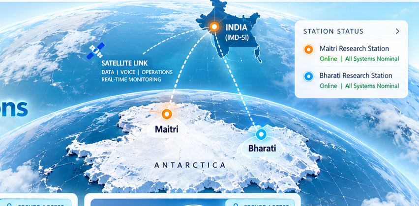
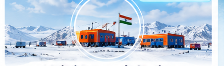

EXPLORING
THE LAST FRONTIER
FOR A BRIGHTER INDIA
“From the Indian Ocean to the Antarctic, for a resilient Earth.”


Choose your dedicated operational portal to securely access station operations, digital twins, and central command.
Central oversight for all Antarctic operations

Station operations and 3D digital twin
Station operations and coastal monitoring
“From the Indian Ocean to the Antarctic, for a resilient Earth.”
Direct access to scientific protocols, historical expedition records, sensor streams, and AIRA helpdesk.
Explore 44+ expeditions, station chronology from Dakshin Gangotri to Maitri-II, and polar mandates.
Standard Operating Procedures, freeze-protection guides, Madrid Protocol, and downloadable data callsets.
Real-time telemetry stream via ISRO GSAT-17, weather dials, barometric records, and JSON exports.
Mission knowledge base, emergency hotlines, ticket dispatch, and AIRA Antarctic intelligent assistant.